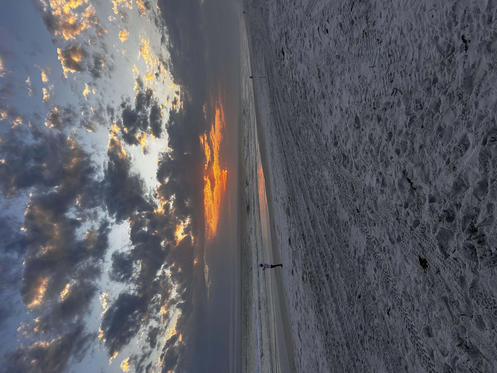
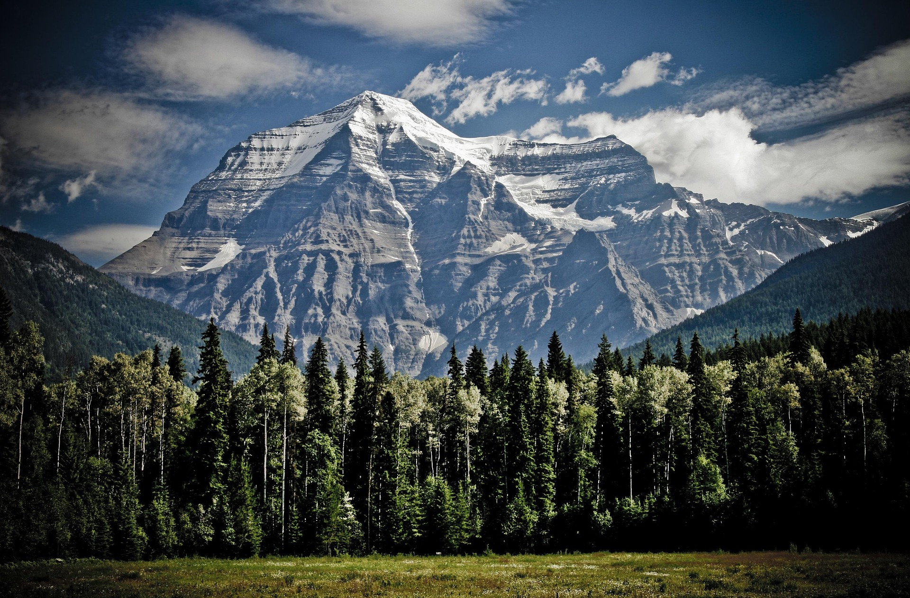

Topic Description
Planning outdoor activities can be a headache when there are so many options. Choosing between a ranch getaway, a mountain retreat, a beach vacation, or a lake escape can be overwhelming, especially when each location provides unique experiences, climates, and attractions. My proposed web application aims to help users explore these four outdoor environments in a clear, organized, and interactive way.
Many planning applications already exist providing people with information about all the places they can visit. For example, these two websites give examples of the great outdoors: National Geographic and Travel And Activities. These websites show a lot of advertisements, which get in the way. I would like to provide information in thoughtout way.
App Description
Home Page
This is the front page for the 4 locations you can choose to vacation on. They all offer a handfull of activities that are outside. There are manyy activities that you can do to relax and get away from everyday life, like swimming, stargazing, and going to a petting a zoo. There are also activities to choose from that will get your heart racing like cliff jumping, parasailing, and skiing.
There is an activity for everyone no matter your level of athelticness. The outdoors can be intimidating with a
Your first choices are:
Beach

Relax by the water
Lake

Nice inland escape
Mountains

Explore the peaks
Desert
Dry climate
Information Page
Why should you want to go outside?
Going outside can have a lot of health benefits including:
- Boosts Immune System
- Improves Heart Health
- Decreases Stress and Anxiety
Contact Us Page
The data we collect on here is just to see what your interests are and how to best contact.